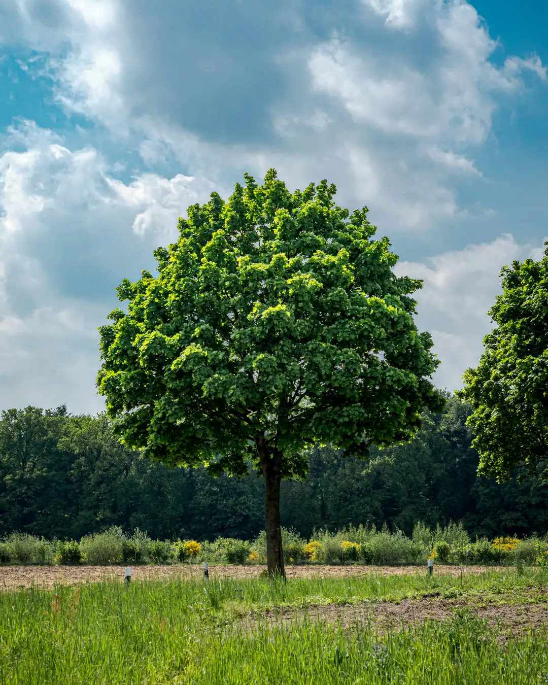
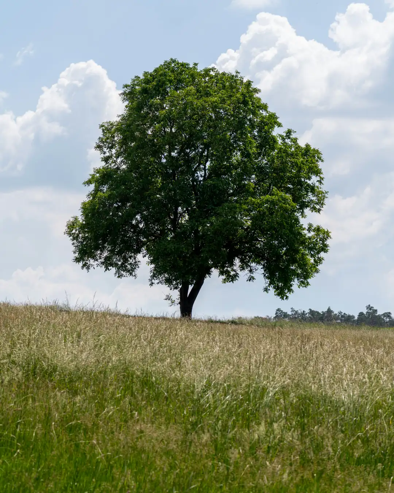
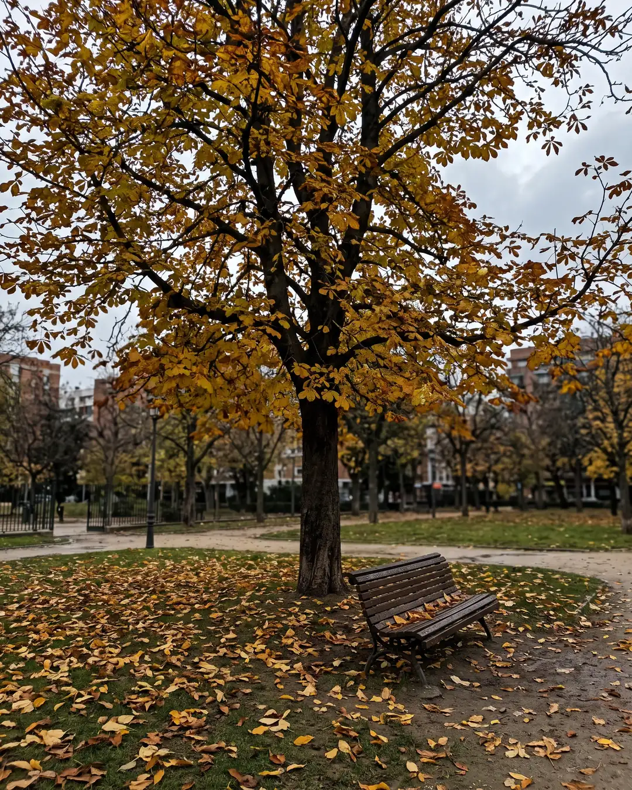
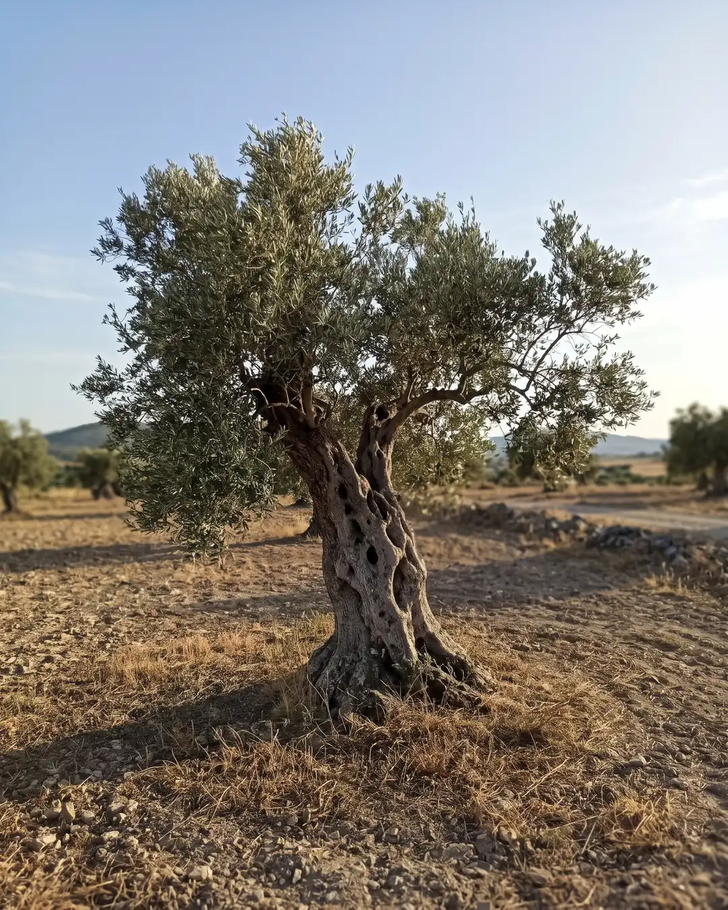
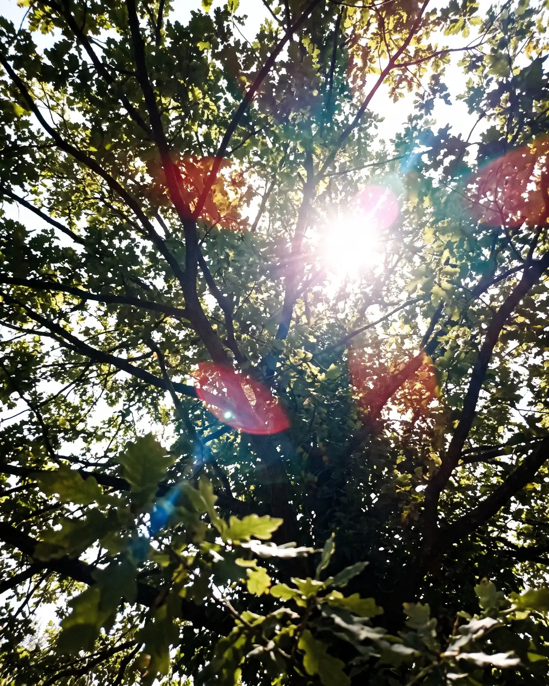

Case #8 · Trees
Images
-

REAL
Real photograph
-

REAL
Real photograph
-

AI
The suspect's confession
A large tree in an urban park in autumn, with yellow leaves on the ground and a bench to one side; overcast day, flat light.
-

AI
The suspect's confession
An old, twisted olive tree in a dry field in mid-afternoon, with low sun from the side and a long shadow; the horizon slightly tilted.
-

AI
The suspect's confession
Treetop seen from below, with the sun slipping through the branches and causing a flare; part of the image burned out by the backlighting.
Fact or Fake
-
FACT “The most isolated tree on Earth was the only one within a 400 km (250 mi) radius.”
It was the Tree of Ténéré, an acacia in the Sahara in Niger, the only tree for 400 km (250 mi) around.
- In 1973 a truck driver who was reportedly asleep or drunk knocked it down.
-
FAKE “The world's tallest tree is taller than the Eiffel Tower.”
The tallest living tree is Hyperion, a California coast redwood of about 116 m (381 ft), while the Eiffel Tower is about 330 m (1,083 ft).
-
FAKE “The record for most trees planted in one day by a country is 100 million.”
In July 2019, Ethiopia claimed to have planted more than 350 million trees in just 12 hours.
- The previous record belonged to India, with about 66 million.
-
FACT “The oldest living organism on Earth is a group of connected trees about 80,000 years old.”
It is Pando, a clonal colony of quaking aspens in Utah, United States, joined by a single root system.
- It looks like about 40,000 trees, but they all share the same genetics.
- It has been growing for tens of thousands of years.
-
FAKE “There is a tree that seems to "weep blood" because of animals that die inside it.”
Some trees, like the dragon's blood tree of Socotra, ooze a blood-red resin, but not because of dead animals.
- It is a natural way to heal wounds and defend against pests.
- Pterocarpus angolensis in southern Africa does it too.